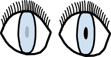

Introductie
Op deze pagina kunnen jullie de geschiedenis lezen van: Toegankelijkheid van het web voor de mensen die blind of slechtziend zijn.
Toegankelijkheid voor blinde of slechtziende mensen
Als we kijken naar de toegankelijkheid voor het web. Hebben we het vaak over de website zo toegankelijk mogelijk te maken voor blinden. Er zijn ook meer mensen waar we rekening mee moeten houden denk hieraan de kleurenblind of mensen met een beperkt gezichtsveld. Iedereen mag meedoen.
In deze samenleving moet en mag iedereen meedoen. Het is zo belangrijk mogelijk om het internet voor iedereen toegankelijk te maken. In deze tijd van de samenleving kun je namelijk bijna niets meer zonder het internet en computers. Daarom is de digitale toegankelijkheid enorm belangrijk. Er is een standaard die goed toegepast moet worden bij het web. Zodat iedereen ook echt goed het internet kan gebruiken door mensen met of zonder een beperking.

Geschiedenis
W3C leidt het programma om het web zo toegankelijk mogelijk te maken voor mensen met een beperking. Dit gebeurde op 7 april 1997, de ontwikkelingen voor het hele project ging beginnen in de zomer van 1997. In het programma zaten verschillende richtlijnen om het web toegankelijk te houden voor iedereen.
Er zijn enorm veel mensen met een beperking meer dan 750 miljoen. Daarom is het cruciaal dat het web voor iedereen bruikbaar wordt. Het W3C wilt zit voor iedereen inzetten. Het Word Wide Web Consortium moet het centrale punt zijn voor de vorming van toegankelijkheidsdoelen zijn.
De eerste ontwikkelingen richtte zich op:
- Verbeteringen voor beschrijvende video en ondertiteling in de HTML
- CSS-extensies voor spraakuitvoer
- Onderhandeling van user agent-functies